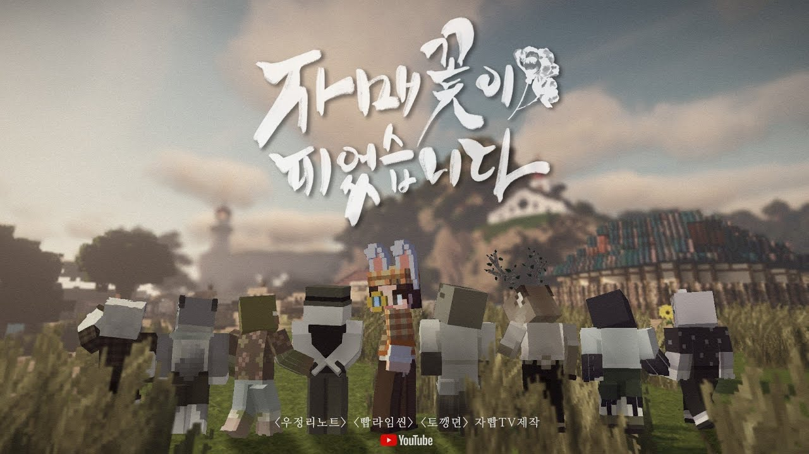

| 자빱의 마인크래프트 컨텐츠 | ||
| 우정리 노트 | 빱라임씬 | 토깽뎐 |
| 여걸세븐 | 자매꽃이 피었습니다 | 동개's 할로윈파티 |

자매꽃이 피었습니다는 유튜버 자빱의 마인크래프트 추리 스릴러 컨텐츠다.
여걸세븐에서 첫등장했던 2팀(통칭 디저트 팀) 스태프들과 시참(시청자 참여)자 2인이 참가했으며, 1팀의 마우수 스태프가 1일차에 카메오 출연하였다.
전작 빱라임씬2 납량특집 부덕리 흉가의 비밀을 찾아라의 후속작이며, 전작의 흑막이자 사이비 종교인 PPP단 신도들이 모여사는 외딴 섬 "자매도"를 배경으로 하고 있다.
고립된 섬마을에서의 생활(물질, 생선 경매 등)과 사이비 종교 특유의 분위기가 어우러진 한국적인 '종교 호러' 콘텐츠.
총 5회차로 진행된다.